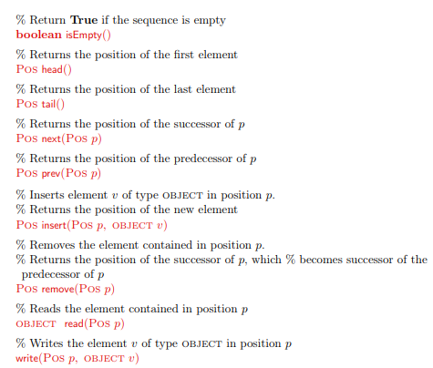
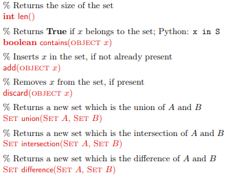
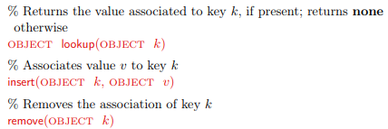
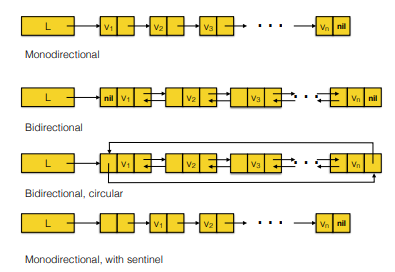
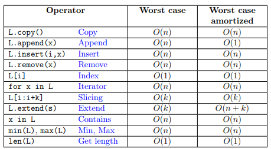
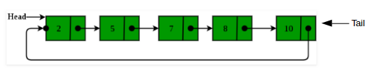
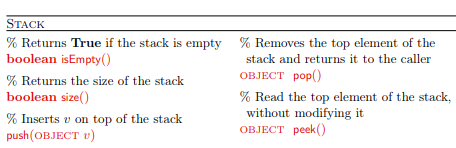
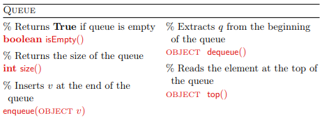

Data structures¶
Programming languages provide many different data structures (e.g. lists, dictionaries, etc) which have different features and performance (both in terms of speed and memory consumption).
To decide which data type suits our needs better, we need to know the different features of the various datatypes that are available (or that we can implement).
Example: Inserting data into a Python list.
[16]:
import time
def listInsert(size):
myList = []
for i in range(size):
myList.insert(0, i)
for i in range(len(myList)):
myList.pop(0)
def listAppend(size):
myList = []
for i in range(size):
myList.append(i)
for i in range(len(myList)):
myList.pop(-1)
start = time.time()
listInsert(10)
end = time.time()
print("List insert took {:.03f}s". format(end - start))
print("With 20000 elements...")
start = time.time()
listInsert(20000)
end = time.time()
print("List insert took {:.03f}s". format(end - start))
print("------------------")
start = time.time()
listAppend(10)
end = time.time()
print("List append took {:.03f}s". format(end - start))
print("With 20000 elements...")
start = time.time()
listAppend(20000)
end = time.time()
print("List append took {:.03f}s". format(end - start))
List insert took 0.000s
With 20000 elements...
List insert took 0.255s
------------------
List append took 0.001s
With 20000 elements...
List append took 0.006s
The behaviour above is due to the fact that adding an element at the beginning of the list with list.insert(0,element) and list.pop(0) end up with python having to move all the elements present in the list to make room for the new element or to adjust the list when we remove it.
By adding and removing from the back of the list we are actually a lot faster. Later on we will also see the collections.deque data structure, that allows for quick operations on lists.
How can we analyze and compare different data types?
Abstract Data Types (ADTs)¶
Some examples taken from the lectures:
ADT: Sequence¶
A sequence is a dynamic data structure (no limit on the number of elements) that contains (possibly repeated) sorted elements (sorted not by the value of the elements, but based on their position within the structure). Allowed operations are: - remove elements by their index (index) - directly access some elements like the first or the last (head and tail) or given their index (position) - sequentially access all the elements moving forward (next) or backwards (previous) in the structure.
Full specification of the sequence ADT (from the lecture):
ADT: Set¶
Sets are dynamic data structures that contain non-repeated elements in no specific order. Allowed operations are: - insert, delete and contains to add, remove or test the presence of an element in the set. - minimum and maximum to retrieve the minimum and maximum element (based on values) - it should be possible to iterate through the elements in the set (in no specific order) with something like for el in set:.
Finally, some operations are defined on two sets like: union, intersection, difference.
Full specification of the set ADT (from the lecture):
set data structure.[17]:
#empty set
a = set()
print(a)
a.add("Pippo")
a.add("Paperino")
a.add("Minni")
#adding the same element twice...
print(a)
a.add("Pippo")
#..has no effect
print(a)
#a set from a list of values
myList = [121, 5, 4, 1, 1, 4, 2, 121]
print("\nList: {}".format(myList))
S = set(myList)
print("Set: {}".format(S))
#accessing elements:
for el in S:
print("\telement: {}".format(el))
print("Is 44 in S? {}".format(44 in S))
print("Is 121 in S? {}".format(121 in S))
#from strings
S1 = set("abracadabra")
S2 = set("AbbadabE")
print("\nS1: {}".format(S1))
print("S2: {}".format(S2))
print("\nIntersection(S1,S2): {}".format(S1 & S2))
print("\nUnion(S1,S2): {}".format(S1 | S2))
print("\nIn S1 but not in S2: {}".format(S1 - S2))
print("In S2 but not in S1: {}".format(S2 - S1))
print("\nIn S1 or S2 but not in both: {}".format(S1 ^ S2))
set()
{'Minni', 'Pippo', 'Paperino'}
{'Minni', 'Pippo', 'Paperino'}
List: [121, 5, 4, 1, 1, 4, 2, 121]
Set: {1, 2, 4, 5, 121}
element: 1
element: 2
element: 4
element: 5
element: 121
Is 44 in S? False
Is 121 in S? True
S1: {'a', 'd', 'c', 'r', 'b'}
S2: {'a', 'd', 'E', 'A', 'b'}
Intersection(S1,S2): {'a', 'd', 'b'}
Union(S1,S2): {'a', 'd', 'c', 'E', 'A', 'r', 'b'}
In S1 but not in S2: {'c', 'r'}
In S2 but not in S1: {'E', 'A'}
In S1 or S2 but not in both: {'c', 'E', 'A', 'r'}
Exercise¶
Write a simple MySet class that implements the abstract data type set. Use a dictionary as internal data structure (hint: you can put the element as key of the dictionary and the value as “1”). For simplicity, the object should be constructed by passing to it a list of elements (e.g. S = mySet([1,2,3]).
The ADT of the set structure is (i.e. the methods to implement):
Implement the iterator interface that yields the next elements. Implement a special method “_ contains _” to test if an element is present with el in S.
Test the code with:
S = MySet([33, 1,4,5,7,5,5,5,4,7,3])
print("Initial S: {}".format(S))
S.add(125)
S.discard(77)
S.discard(5)
print("S now: {}".format(S))
print("Does S contain 13? {}".format(13 in S))
print("Does S contain 125? {}".format(125 in S))
print("All elements in S:")
for s in S:
print("\telement: {}".format(s))
print("\nS:{}".format(S))
S1 = MySet([33, 0, 3,4, 4, 33,44])
print("S1: {}".format(S1))
print("\nUnion: {}".format(S.union(S1)))
print("Intersection: {}".format(S.intersection(S1)))
print("S - S1: {}".format(S.difference(S1)))
print("S1 - S: {}".format(S1.difference(S)))
print("(S - S1) U (S1 -S): {}".format(S.difference(S1).union(S1.difference(S))))
and compare the results with what would give python’s built-in set data structure.
[ ]:
%reset -f
class MySet:
def __init__(self, elements):
self.iteratorPosition = 0
self.__data = dict()
for el in elements:
self.__data[el] = 1
#let's specify the special operator for len
def __len__(self):
return len(self.__data)
#this is the special operator for in
def __contains__(self, element):
el = self.__data.get(element, None)
return el != None
#we do not redefine __add_ because that is for S1 + S2
#where S1 and S2 are sets
def add(self, element):
#dont care if already there
self.__data[element] = 1
def discard(self, element):
#equivalent to:
#if element in self.__data: del self.__data[element]
el = self.__data.pop(element, None)
def __iter__(self):
return self
def __next__(self):
if self.iteratorPosition > (len(self.__data) - 1):
self.iteratorPosition = 0
raise StopIteration()
pos = self.iteratorPosition
self.iteratorPosition += 1
keys = list(self.__data.keys())
return keys[pos]
def __str__(self):
keys = self.__data.keys()
return "{"+"{}".format(", ".join([str(x) for x in keys])) + "}"
def union(self, other):
"""elements in either of the two sets"""
elements = []
for el in other:
elements.append(el)
S = MySet(elements)
i=0
for el in self:
S.add(el)
return S
def intersection(self, other):
"""elements in both sets"""
"""elements in both sets"""
my_keys = self.__data.keys()
your_keys = other.__data.keys()
inter = [x for x in my_keys if x in your_keys]
return MySet(inter)
def difference(self, other):
"""elements in self but not in other"""
diff = [x for x in self if x not in other]
return MySet(diff)
if __name__ == "__main__":
S = MySet([33, 1,4,5,7,5,5,5,4,7,3])
print("Initial S: {}".format(S))
S.add(125)
S.discard(77)
S.discard(5)
print("S now: {}".format(S))
print("Does S contain 13? {}".format(13 in S))
print("Does S contain 125? {}".format(125 in S))
print("All elements in S:")
for s in S:
print("\telement: {}".format(s))
print("\nS: {}".format(S))
S1 = MySet([33, 0, 3,4, 4, 33,44])
print("S1: {}".format(S1))
print("\nUnion: {}".format(S.union(S1)))
print("Intersection: {}".format(S.intersection(S1)))
print("S - S1: {}".format(S.difference(S1)))
print("S1 - S: {}".format(S1.difference(S)))
print("(S - S1) U (S1 -S): {}".format(S.difference(S1).union(S1.difference(S))))
#### Test vs python's set
print("Testing python's builtin:")
pS = set([33, 1,4,5,7,5,5,5,4,7,3])
pS.add(125)
#pS.remove(77)
pS.remove(5)
print("pS: {}".format(pS))
pS1 = set([33, 0, 3,4, 4, 33,44])
print("pS1: {}".format(pS1))
print("Union: {}".format(pS | pS1))
print("Intersection: {}".format(pS & pS1))
print("pS - pS1: {}".format(pS - pS1))
print("pS1 - pS: {}".format(pS1 - pS))
print("(pS - pS1) U (pS1 -pS): {}".format(pS - pS1 | pS1 - pS))
Dictionaries map keys to values and allow insertion, removal and lookup:
Linked lists are collections of objects and pointers (either 1 or 2) that point to the next element in the list or to both the next and previous element in the list.
Linked lists can be linear or circular when the last element is connected to the first and only a fixed amount of elements is allowed and then newly-added elements replace previous ones.
They can be bidirectional if from one element one can move to the previous and to the next or monodirectional when it is possible only to go to the next element.
Here are some of the possible types of list (from the lecture):
The operations that can be performed on lists, and the associated costs, are:
Example: bidirectional linked list¶
Let’s implement a bidirectional linked list of objects of type “Node” (that contain attributes: data, prevEl and nextEl.
[1]:
%reset -f
class Node:
def __init__(self, data):
self.__data = data
self.__prevEl = None
self.__nextEl = None
def getData(self):
return self.__data
def setData(self, newdata):
self.__data = newdata
# next element
def setNext(self, node):
self.__nextEl = node
def getNext(self):
return self.__nextEl
# previous element
def setPrev(self,node):
self.__prevEl = node
def getPrev(self):
return self.__prevEl
def __str__(self):
return str(self.__data)
# for sorting
def __lt__(self, other):
return self.__data < other.__data
class BiLinkList:
def __init__(self):
self.__head = None
self.__tail = None
self.__len = 0
self.__minEl = None
self.__maxEl = None
def __len__(self):
return self.__len
def min(self):
return self.__minEl
def max(self):
return self.__maxEl
def append(self,node):
if type(node) != Node:
raise TypeError("node is not of type Node")
else:
if self.__head == None:
self.__head = node
self.__tail = node
else:
node.setPrev(self.__tail)
self.__tail.setNext(node)
self.__tail = node
self.__len += 1
# this assumes that nodes can be sorted
if self.__minEl == None or self.__minEl > node:
self.__minEl = node
if self.__maxEl == None or self.__maxEl < node:
self.__maxEl = node
def insert(self, node, i):
# to avoid index problems, if i is out of bounds
# we insert at beginning or end
if i > self.__len:
i = self.__len #I know that it is after tail!
if i < 0:
i = 0
cnt = 0
cur_el = self.__head
while cnt < i:
cur_el = cur_el.getNext()
cnt += 1
#add node before cur_el
if cur_el == self.__head:
#add before current head
node.setNext(self.__head)
self.__head.setPrev(node)
self.__head = node
else:
if cur_el == None:
#add after tail
self.__tail.setNext(node)
node.setPrev(self.__tail)
self.__tail = node
else:
p = cur_el.getPrev()
p.setNext(node)
node.setPrev(p)
node.setNext(cur_el)
cur_el.setPrev(node)
self.__len += 1
#This assumes that nodes can be sorted
if self.__minEl == None or self.__minEl > node:
self.__minEl = node
if self.__maxEl == None or self.__maxEl < node:
self.__maxEl = node
def getAtIndex(self, i):
if i > self.__len:
return None
else:
cnt = 0
cur_el = self.__head
while cnt < self.__len:
if cnt == i:
return cur_el
else:
cnt += 1
cur_el = cur_el.getNext()
def iterator(self):
cur_el = self.__head
while cur_el != None:
yield cur_el
cur_el = cur_el.getNext()
def __str__(self):
if self.__head != None:
dta = str(self.__head)
cur_el = self.__head.getNext()
while cur_el != None:
dta += " <-> " + str(cur_el)
cur_el = cur_el.getNext()
return str(dta)
else:
return ""
if __name__ == "__main__":
import random
MLL = BiLinkList()
for i in range(1,50,10):
n = Node(i)
MLL.append(n)
print(MLL)
for el in MLL.iterator():
print("\t{} prev:{} next:{}".format(el,
el.getPrev(),
el.getNext()))
n = Node(2)
MLL.insert(n,2)
n = Node(-10)
MLL.append(n)
n = Node(1000)
MLL.insert(n, -1)
n = Node(27)
MLL.insert(n, 2000)
print(MLL)
for el in MLL.iterator():
print("\t{} prev:{} next:{}".format(el,
el.getPrev(),
el.getNext()))
print("Number of elements: {} min: {} max: {}".format(len(MLL),
MLL.min(),
MLL.max()))
N = MLL.getAtIndex(4)
print("MLL[4] = {}".format(N))
for i in range(3):
print("Moving backwards {} steps from {}".format(i+1, N))
print("\tI find node: {}".format(N.getPrev()))
N = N.getPrev()
1 <-> 11 <-> 21 <-> 31 <-> 41
1 prev:None next:11
11 prev:1 next:21
21 prev:11 next:31
31 prev:21 next:41
41 prev:31 next:None
1000 <-> 1 <-> 11 <-> 2 <-> 21 <-> 31 <-> 41 <-> -10 <-> 27
1000 prev:None next:1
1 prev:1000 next:11
11 prev:1 next:2
2 prev:11 next:21
21 prev:2 next:31
31 prev:21 next:41
41 prev:31 next:-10
-10 prev:41 next:27
27 prev:-10 next:None
Number of elements: 9 min: -10 max: 1000
MLL[4] = 21
Moving backwards 1 steps from 21
I find node: 2
Moving backwards 2 steps from 2
I find node: 11
Moving backwards 3 steps from 11
I find node: 1
Exercise¶
Complete the bidirectional linked list example seen above by adding the following methods:
remove(x)method that removes element x from the list if presentslice(x,y)wherexandyare integers. The slice method should return another bidirectionaly linked list with elements fromx(included) toy(excluded).
Show/Hide Solution
Exercise¶
Implement a circular single-directional linked list of objects SingleNode (that have a data and a link to the next element) with the following methods:
append(element): adds at the end of the list;extend(list_of_elements): adds all the elements in the listget(index): reads the node at position index (if index is lower than length else return None);removeAt(index): removes the element at position index if it exists;removeEl(el): removes the element el, if present.head(): gets the first element of the list;tail(): gets the last element of the list;__len__(): returns the length of the list;__str__(): returns a string representation of the list:
1 --> 2 --> 3 --> ... N --|
^-------------------------|
Remember that a circular list should always have the last element (tail) pointing to the first element (head):
Test your class with the following code:
CL = CircularList()
n = SingleNode([1])
n1 = SingleNode(2)
n2 = SingleNode([3])
n3 = SingleNode([4])
n4 = SingleNode(5)
n5 = SingleNode([6])
CL.append(n)
CL.append(n1)
CL.append(n2)
CL.extend([n3,n4,n5])
n = SingleNode("luca")
CL.append(n)
print(CL)
print("CL has length: {}".format(len(CL)))
print("Head:{}\nTail:{}".format(CL.head(),CL.tail()))
print("{} is at position: {}".format(CL.get(3),3))
print("{} is at position: {}".format(CL.get(-10),-10))
print("{} is at position: {}".format(CL.get(20),20))
print("{} is at position: {}".format(CL.get(0),0))
CL.removeAt(2)
CL.removeAt(5)
print(CL)
CL.removeEl(n5)
print(CL)
#n is not present!
CL.removeEl(n)
print(CL)
[ ]:
%reset -f
""" Can place this in SingleNode.py"""
class SingleNode:
def __init__(self, data):
self.__data = data
self.__nextEl = None
def getData(self):
return self.__data
def setData(self, newdata):
self.__data = newdata
def setNext(self, node):
self.__nextEl = node
def getNext(self):
return self.__nextEl
def __str__(self):
return str(self.__data)
#for sorting
def __lt__(self, other):
return self.__data < other.__data
"""Can place this in CircularList.py"""
class CircularList:
def __init__(self):
self.__head = None
self.__tail = None
self.__len = 0
def __len__(self):
return self.__len
def append(self, node):
if type(node) != SingleNode:
raise TypeError("node is not of type SingleNode")
else:
if self.__head == None:
self.__head = node
self.__tail = node
else:
node.setNext(self.__head)
self.__tail.setNext(node)
self.__tail = node
self.__len += 1
def extend(self, nodesList):
for el in nodesList:
self.append(el)
def head(self):
return self.__head
def tail(self):
return self.__tail
def get(self, index):
i = 0
cur_el = self.__head
if index < 0:
#should someone input a very small number!
while index < 0:
index = self.__len + index
while i < index:
cur_el = cur_el.getNext()
i += 1
return cur_el
def removeAt(self, index):
i = 0
cur_el = self.__head
if index < 0:
#should someone input a very small number!
while index < 0:
index = self.__len + index
while i < index-1:
cur_el = cur_el.getNext()
i += 1
prev = cur_el
cur_el = prev.getNext()
next_el = cur_el.getNext()
prev.setNext(next_el)
if cur_el == self.__tail:
self.__tail = prev
if cur_el == self.__head:
self.__head = prev
self.__len -= 1
def removeEl(self, element):
i = 0
cur_el = self.__head
while cur_el.getNext() != element and cur_el != self.__tail:
cur_el = cur_el.getNext()
if cur_el != self.__tail:
prev = cur_el
cur_el = prev.getNext()
#cur_el is element now
next_el = cur_el.getNext()
prev.setNext(next_el)
if cur_el == self.__tail:
self.__tail = prev
if cur_el == self.__head:
self.__head = prev
self.__len -= 1
def __str__(self):
outStr = ""
cur_el = self.__head
outStr = str(cur_el)
while cur_el != self.__tail:
cur_el = cur_el.getNext()
outStr += "-->" + str(cur_el)
L = len(outStr)
outStr += "--|\n^"
i = 0
while i < L+1:
outStr = outStr + "-"
i += 1
outStr += "|"
return outStr
if __name__ == "__main__":
CL = CircularList()
n = SingleNode([1])
n1 = SingleNode(2)
n2 = SingleNode([3])
n3 = SingleNode([4])
n4 = SingleNode(5)
n5 = SingleNode([6])
CL.append(n)
CL.append(n1)
CL.append(n2)
CL.extend([n3,n4,n5])
n = SingleNode("luca")
CL.append(n)
print(CL)
print("CL has length: {}".format(len(CL)))
print("Head:{}\nTail:{}".format(CL.head(),CL.tail()))
print("{} is at position: {}".format(CL.get(3),3))
print("{} is at position: {}".format(CL.get(-10),-10))
print("{} is at position: {}".format(CL.get(20),20))
print("{} is at position: {}".format(CL.get(0),0))
CL.removeAt(2)
CL.removeAt(5)
print(CL)
CL.removeEl(n5)
print(CL)
#n is not present!
CL.removeEl(n)
print(CL)
Stacks are data structures that provide access to a specific element, that is the last element inserted into the stack.
The specific operations available for stacks are described in the abstract data type (from the lecture):
Example: Let’s implement a stack class MyStack by using Python’s list.
[2]:
class MyStack:
def __init__(self):
self.__data = list()
def isEmpty(self):
return len(self.__data) == 0
def __len__(self):
return len(self.__data)
def push(self, element):
"""adds an element on top of the stack"""
self.__data.append(element)
def pop(self):
"""removes one element from the stack and returns it"""
if len(self.__data) > 0:
return self.__data.pop()
else:
return None
def peek(self):
if len(self.__data) > 0:
return self.__data[-1]
else:
return None
if __name__ == "__main__":
S = MyStack()
print("Is it empty? {}".format(S.isEmpty()))
print("Initial length: {}".format(len(S)))
S.push("[1,2,3]")
print("Added [1,2,3]")
S.push("[4,5,6]")
print("Added [4,5,6]")
print("Is it empty? {}".format(S.isEmpty()))
S.push([1,4,5])
print("Added [1,4,5]")
print("On top of the stack: {}".format(S.peek()))
print("Let's start removing elements...")
print("On top of the stack: {}".format(S.pop()))
print("On top of the stack: {}".format(S.pop()))
print("On top of the stack: {}".format(S.pop()))
print("On top of the stack: {}".format(S.pop()))
S.push(123456)
print("Added 123456")
print("On top of the stack: {}".format(S.pop()))
print("On top of the stack: {}".format(S.pop()))
Is it empty? True
Initial length: 0
Added [1,3,4]
Added [4,5,6]
Is it empty? False
Added [1,4,5]
On top of the stack: [1, 4, 5]
Let's start removing elements...
On top of the stack: [1, 4, 5]
On top of the stack: [4,5,6]
On top of the stack: [1,2,3]
On top of the stack: None
Added 123456
On top of the stack: 123456
On top of the stack: None
Exercise¶
Stacks are great to evaluate postfix expressions. Some examples of postfix expressions are:
10 5 +
that encodes for 10 + 5 = 15
10 5 + 7 * that encodes for (10 + 5) * 7 = 105
Given a postfix expression it can be evaluated in the following way:
start from the beginning of the string (better, list obtained by splitting by ” “), remove the first element and insert elements in the stack unless they are operators. If they are operators, pop two elements and apply the operation, storing it in a varible;
If the list is empty, the result is stored in the variable, otherwise go back to point 1.
Assuming only integer numbers and the 4 standard binary operators +,-,/,*: write some python code that uses the stack class seen above MyStack and evaluates the following postfix expressions:
operations = ["10 5 + 7 *", "1 2 3 4 5 6 7 8 + + + + + + +", "1 2 3 4 5 + - * /"]
[3]:
%reset -f
class MyStack:
def __init__(self):
self.__data = []
def isEmpty(self):
return len(self.__data) == 0
def __len__(self):
return len(self.__data)
def push(self, element):
"""adds an element on top of the stack"""
self.__data.append(element)
def pop(self):
"""removes one element from the stack and returns it"""
if len(self.__data) > 0:
ret = self.__data[-1]
del self.__data[-1]
return ret
else:
return None
def peek(self):
if len(self.__data) > 0:
return self.__data[-1]
else:
return None
def evaluatePostfix(expr):
S = MyStack()
els = expr.split(" ")
res = 0
infix = ""
for i in range(len(els)):
e = els[i]
if e not in "+-*/":
S.push(int(e))
else:
o2 = S.pop()
o1 = S.pop()
tmp = 0
infix = "(" + str(o1) + " " + e +" " + str(o2) + ")"
print(infix)
if e == "+":
tmp = o1 + o2
elif e == "-":
tmp = o1 - o2
elif e == "/":
tmp = o1 / o2
else:
tmp = o1 * o2
res = tmp
if i != len(els):
S.push(res)
return res
operations = ["10 5 + 7 *",
"1 2 3 4 5 6 7 8 + + + + + + +",
"1 2 3 4 5 + - * /",
"5 4 + 8 /",
"3 10 2 - 5 * +"]
for op in operations:
print("Operation: {}".format(op))
res = evaluatePostfix(op)
print("Result: {}".format(res))
Operation: 10 5 + 7 *
(10 + 5)
(15 * 7)
Result: 105
Operation: 1 2 3 4 5 6 7 8 + + + + + + +
(7 + 8)
(6 + 15)
(5 + 21)
(4 + 26)
(3 + 30)
(2 + 33)
(1 + 35)
Result: 36
Operation: 1 2 3 4 5 + - * /
(4 + 5)
(3 - 9)
(2 * -6)
(1 / -12)
Result: -0.08333333333333333
Operation: 5 4 + 8 /
(5 + 4)
(9 / 8)
Result: 1.125
Operation: 3 10 2 - 5 * +
(10 - 2)
(8 * 5)
(3 + 40)
Result: 43
Queues, also called FIFO queues: first in first out queues, are linear dynamic data structures that add at the back of the queue and remove elements from the beginning.
The specific operations available for queues are reported below (from the lecture):
Example: Let’s implement a (slow!) queue class MyQueue by using Python’s list.
[4]:
%reset -f
class MyQueue:
def __init__(self):
self.__data = list()
def isEmpty(self):
return len(self.__data) == 0
def __len__(self):
return len(self.__data)
def enqueue(self, element):
self.__data.insert(0,element)
def dequeue(self):
el = None
if len(self.__data) > 0:
el = self.__data.pop()
return el
def top(self):
if len(self.__data) > 0:
return self.__data[-1]
if __name__ == "__main__":
import time
Q = MyQueue()
Q.enqueue(1)
Q.enqueue(2)
Q.enqueue(3)
print("Size of Q: {}".format(len(Q)))
Q.enqueue(4)
Q.enqueue(5)
print("TOP is now: {}\n".format(Q.top()))
while not Q.isEmpty():
el = Q.dequeue()
print("Removing el {} from queue".format(el))
start_t = time.time()
for i in range(400000):
Q.enqueue(i)
print("\nQueue has size: {}".format(len(Q)))
#comment the next 3 lines and see what happens
while not Q.isEmpty():
el = Q.dequeue()
print("\nQueue has size: {}".format(len(Q)))
end_t = time.time()
print("\nElapsed time: {:.2f}s".format(end_t - start_t))
Size of Q: 3
TOP is now: 1
Removing el 1 from queue
Removing el 2 from queue
Removing el 3 from queue
Removing el 4 from queue
Removing el 5 from queue
Queue has size: 400000
Queue has size: 0
Elapsed time: 51.23s
Note that in the example above, enqueue adds at the beginning and dequeue removes from the end, this requires n shifts at each insertion, which is quite time costly!!!
Example: Let’s implement a queue class MyQueue by using python’s list but with a quicker len operator (i.e. a counter that avoids looping all the time) and with a quicker enqueue operator.
[2]:
%reset -f
class MyQueue:
def __init__(self):
self.__data = list()
self.__length = 0
def isEmpty(self):
return len(self.__data) == 0
def __len__(self):
return self.__length
## Add at the end not at the beginning
def enqueue(self, element):
self.__data.append(element)
self.__length += 1
def dequeue(self):
el = None
if len(self.__data) > 0:
el = self.__data.pop(0)
self.__length -= 1
return el
def top(self):
if len(self.__data) > 0:
return self.__data[-1]
if __name__ == "__main__":
import time
Q = MyQueue()
Q.enqueue(1)
Q.enqueue(2)
Q.enqueue(3)
print("Size of Q: {}".format(len(Q)))
Q.enqueue(4)
Q.enqueue(5)
print("TOP is now: {}\n".format(Q.top()))
while not Q.isEmpty():
el = Q.dequeue()
print("Removing el {} from queue".format(el))
start_t = time.time()
for i in range(400000):
Q.enqueue(i)
print("\nQueue has size: {}".format(len(Q)))
#comment the next 3 lines and see what happens
while not Q.isEmpty():
el = Q.dequeue()
print("\nQueue has size: {}".format(len(Q)))
end_t = time.time()
print("\nElapsed time: {:.2f}s".format(end_t - start_t))
Size of Q: 3
TOP is now: 5
Removing el 1 from queue
Removing el 2 from queue
Removing el 3 from queue
Removing el 4 from queue
Removing el 5 from queue
Queue has size: 400000
Queue has size: 400000
Elapsed time: 0.33s
The problem with the previous code is that removing elements from the beginning of a list requires \(n\) shifts and therefore has a cost \(O(n)\), with \(n\) number of elements in the list. Try commenting out the following lines:
while not Q.isEmpty():
el = Q.dequeue()
This would make the code above a lot faster (less than a second).
The solution is to use Python’s collections.dequeue.
Exercise¶
Implement a faster queue by using the
collections.dequeuecollection.
[1]:
%reset -f
from collections import deque
import time
Q = deque()
start_t = time.time()
for i in range(400000):
#add to the right
Q.append(i)
print("Q has {} elements".format(len(Q)))
while len(Q) > 0:
#remove from the left
Q.popleft()
print("Q has {} elements".format(len(Q)))
end_t = time.time()
print("\nElapsed time: {:.2f}s".format(end_t - start_t))
Q has 400000 elements
Q has 0 elements
Elapsed time: 0.20s
Python provides several data structures in the collections module, like for example, dequeues etc. You can find more information at https://docs.python.org/3.9/library/collections.html?highlight=collections#module-collections.